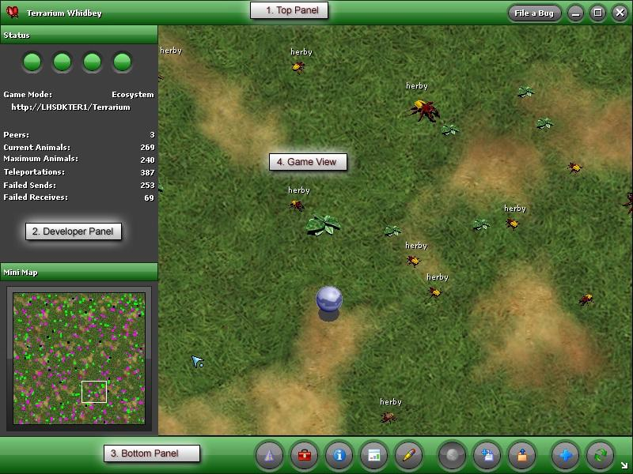

Welcome to Terrarium
Welcome to the .NET Terrarium project! Terrarium was created by members of the .NET Framework team in the .NET Framework 1.0 timeframe and was used initially as an internal test application. At conferences and via online chats, Terrarium provided a great way for developers to learn about the new .NET programming model and languages as they developed creatures and introduced them into a peer-to-peer ecosystem.
The Windows SDK team evolved the game in the .NET Framework 2.0 timeframe, but we haven't worked on it for over two years. As a result, the source code for Terrarium 2.0 doesn’t use the very latest .NET technologies. By making the source code available, we hope to provide a fun and interesting opportunity to learn about and use the latest advances in the .NET Framework.
In Terrarium, you can create herbivores, carnivores, or plants and then introduce them into a peer-to-peer, networked ecosystem where they complete for survival. Terrarium demonstrates some of the features of the .NET Framework, including Windows Forms integration with DirectX®; XML Web services; support for peer-to-peer networking; support for multiple programming languages; the capability to update smart client, or Windows-based, applications via a remote Web server; and the evidence-based and code access security infrastructure.